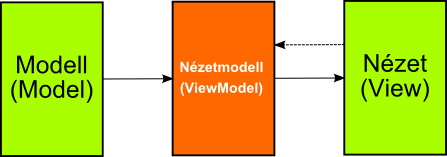
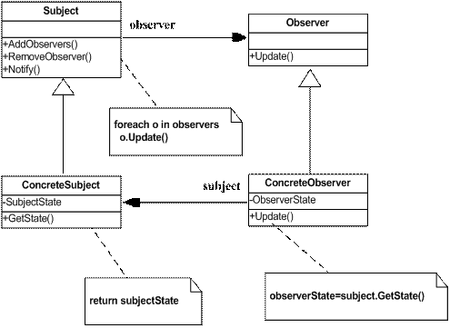

Eseményvezérelt alkalmazások fejlesztése 2.
7. gyakorlat - Windows Presentation Foundation alapjai
- Ezen az órán megismerkedünk a Windows Presentation Foundation alapjaival, illetve egy kicsit a szemléletmódjával.
- Bepillantást fogunk nyerni a XAML nyelv alapjaiba.
- Megismerkedünk az Model-View-ViewModel architektúrával, milyen elõnyökkel jár, hogyan kapcsolódik a WPF-hez stb.
- Végül pedig az adatkötés (data binding) alapjait fogjuk átnézni, ami a WPF egyik legtöbbet használt technikája
- A XAML egy XML alapú deklaratív nyelv, aminek segítségével a programozó meghatározhatja az alkalmazás kinézetét. Segítségével stílusokat definiálhatunk, az alkalmazás logikai fáját építhetjük fel, erõforrásokat definiálhatunk. A fordító ezután a szöveges fájlból egy bináris változatot hoz létre (BAML), amit késõbb a WPF felhasználja a megjelenítés során.
- Ez a megközelítés már a webes világban többször bebizonyította, hogy egy járható útról van szó: XML alapú nyelv segítségével (HTML5/XAML) leírjuk az alkalmzás kinézetét, stílusokkal (CSS3/XAML) az egyéni igények szerint alakítjuk és a legvégén implementáljuk valamilyen nyelven (JavaScript/C#) az üzleti logikát.
- "Hello World" program megvalósítása:
<Window x:Class="WpfApplication1.MainWindow"
xmlns="http://schemas.microsoft.com/winfx/2006/xaml/presentation"
xmlns:x="http://schemas.microsoft.com/winfx/2006/xaml"
Title="MainWindow" Height="350" Width="525">
<Grid>
<TextBlock>Hello World!</TextBlock>
</Grid>
</Window>
- Bármilyen WPF-es vezérlõt lehet példányosítani a XAML segítségével. Attribútumokon keresztül lehet beállítani a control-ok különbözõ tulajdonságait (Margin, (Min/Max)Width/(Min/Max)Height, Content stb.). Az attribútumok értékét mindig sztringliterál formájában adjuk meg, majd a WPF a típuskonverterek segítségével feldolgozza azt.
<Grid>
<TextBlock Foreground="Red" Text="Hello World!"></TextBlock>
</Grid>
Ha olyan típusú attribútumnak akarunk értéket adni, aminek az értékét nem lehet egyszerûen karaktersorozatként megadni, akkor az XML tag közé kell beágyaznunk az értéket:
<Grid>
<TextBlock>
<TextBlock.Text>
Hello World!
</TextBlock.Text>
<TextBlock.Foreground>
<SolidColorBrush Color="Red" />
</TextBlock.Foreground>
</TextBlock>
</Grid>
- XML-bõl ismert névtereket is használhatunk, ami a külsõ (általában saját) névtérbõl tudjuk elérni a vezérlõket (vagy bármilyen más .NET-beli osztályt). Névtereket bármelyik XML tag-ben lehet definiálni, ezért alapvetõen szabad kezet kapunk:
<TextBlock xmlns:system="clr-namespace:System;assembly=mscorlib">
<TextBlock.Text>
<system:String>Hello World!</system:String>
</TextBlock.Text>
</TextBlock>
Úgynevezett markup extension-ök segítségével az attribútumoknak dinamikusan is adhatunk értéket.
<Grid xmlns:system="clr-namespace:System;assembly=mscorlib">
<Grid.Resources>
<system:String x:Key="Value">Hello World!</system:String>
</Grid.Resources>
<TextBlock Text="{StaticResource Value}" />
</Grid>
StaticResource segítségével az erõforrásokban (Resources tulajdonság) definiált elemekre hivatkozhatunk, de csak egyszer töltõdik be annak az értéke, míg a DynamicResource már az objektum változásait is figyelemmel követi. Sajátokat is készíthetünk, egyszerûen úgy, hogy a MarkupExtension osztályból származtatjuk a sajátunkat.

- A Windows Forms-nál megismerkedtünk a Model-View architektúrával, ami kisebb alkalmazások esetében egy nagyon jól kezelhetõ megoldás, de nagyobb lélegzetvételû projektek esetében ez már kevés ...
- A Model-View-Viewmodel továbbgondolja az elõzõ architektúrát és két réteg helyett háromra bontja azt. Az alapötlet az, hogy a modell rétegben hagyjuk meg a különbözõ adatszerkezeteinket, a nézetben definiáljuk az alkalmazásunk kinézet és a nézetmodell pedig arra szolgál, hogy az utóbbi két réteg között kapcsolatot létesítsen. Ide kerülnek az alkalmazás üzleti logikái, itt hozhatjuk kényelmes formára a nézet számára fontos adatokat, illetve tesztelhetõség szempontjából is nagyon jó megoldás.
- Használhatnánk más architektúrákat is, de a Windows Presentation Foundation ezt az architektúrát támogatja.
- A szerveroldali webprogramozásban például a Model-View-Controller felépítést használják, mert a sokéves tapasztalat azt mutatta, hogy ez vált be a legjobban.
- A JavaFX pedig a Model-View-Presenter-t (MVP) használja, ami ugyanúgy hasonló megközelítés, mint az MVVM.
- Nemcsak a WPF használja ki az MVVM adta lehetõségeket, hanem a kliens oldali webprogramozásban is találhatunk ilyen technológiákat: ilyen például a Knockout.
- A nézetmodell rétegben lévõ objektumaink kicsit mások, mint amik a modell rétegben foglalnak helyet. Elõször is képesek szólni a nézetnek, hogy megváltozott az állapotuk, aminek segítségével a felület képes automatikusan frissülni.
- Ahhoz, hogy ezt a tulajdonságot meg tudjuk valósítani, implementálnunk kell az osztályunkba az INotifyPropertyChanged interfészt. Ez egy nagyon könnyûsúlyú interfész, ami egy dolgot tud: képes szólni a PropertyChanged eseményén keresztül a feliratkozottaknak, hogy megváltozott az objektum belsõ állapota.
public interface INotifyPropertyChanged
{
event PropertyChangedEventHandler PropertyChanged;
}
Ezt viszont kényelmetlen lenne állandóan implementálnunk (nem beszélve arról, hogy ezzel kódot is duplikálunk jóformán), ezért ennek megoldására a gyakorlatban eyg absztrakt õsosztályt szoktak bevezetni, amit majd implementálni kell minden nézetmodell osztálynál.
// Nézetmodellek absztrakt õsosztálya
public abstract class ViewModelBase : INotifyPropertyChanged
{
// Tulajdonság értékének megváltozása esetén lefutó esemény
public event PropertyChangedEventHandler PropertyChanged;
// Tulajdonság értékének megváltoztatását jelzõ metódus
protected ViewModelBase OnPropertyChanged<TPropertyType>(Expression<Func<TPropertyType>> expression)
{
if (expression == null)
throw new ArgumentNullException("expression");
return OnPropertyChanged(GetMemberNameFromExpression(expression));
}
// Tulajdonság értékének megváltoztatását jelzõ metódus
protected virtual ViewModelBase OnPropertyChanged(string propertyName)
{
PropertyChangedEventHandler handler = PropertyChanged;
if (handler != null) handler(this, new PropertyChangedEventArgs(propertyName));
return this;
}
// Lekérdezi a lambdafüggvény
private string GetMemberNameFromExpression<T>(Expression<Func<T>> expression)
{
/* itt történik valami varázslat ... */
}
}
- GetMemberNameFromExpression metódusunk:
// Lekérdezi a lambdafüggvény
private string GetMemberNameFromExpression<T>(Expression<Func<T>> expression) {
if (expression == null) throw new ArgumentException("Getting property name form expression is not supported for this type.");
var lambda = expression as LambdaExpression; //Megnézzük, hogy felhasználó lambdafüggvényt adott-e át paraméterként
if (lambda == null) // ha nem akkor hibát dobunk
throw new NotSupportedException("Getting property name form expression is not supported for this type.");
var memberExpression = lambda.Body as MemberExpression; //lekérjük a lambda kifejezésünk törzsét
if (memberExpression != null)
return memberExpression.Member.Name; // ha ez sikerül, akkor a Member.Name tulajdonság fogja tárolni a nevet
var unary = lambda.Body as UnaryExpression; //ha nem akkor tovább próbálkozunk
if (unary != null) {
var member = unary.Operand as MemberExpression;
if (member != null)
return member.Member.Name;
}
throw new NotSupportedException("Getting property name form expression is not supported for this type.");
}
Használata:
public class PersonViewModel : ViewModelBase {
private string _Name;
public string Name {
get { return _Name; } //a tulajdonság értékének a lekérése ugyanúgy történik
set {
_Name = value; //eltároljuk az értéket
OnPropertyChanged(() => Name); //szólunk, hogy megváltozott a Name tulajdonság értéke
}
}
}
- Mivel három rétegbe szeparáltuk az alkalmazásunkat, ezért a rétegek közötti információcsere kicsit bonyolultabbá válik. Azt szeretnénk, hogy ha a nézet rétegben megváltozik valami adat, akkor az automatikusan frissüljön a mélyebben lévõ rétegekben is, illetve szeretnénk ezt fordítva is megoldani.
- Az egyszerû értékadás, csak a változónk értékét állítja be, de nem tudjuk, hogy ez mikor történt! Szeretnénk egy olyan objektumot, ami képes értesíteni más objektumokat arról, hogy megváltozott az értéke. Lényegében ez az alapötlete az Observer tervezési mintának.

- Hogyan is mûködik ez WPF-ben? Adatkötést általában a nézetmodell és a nézet közötti objektumok között létesítünk. Ezt a WPF a DependencyProperty segítségével oldja meg, ami mindig a nézet oldalon van definiálva.

- Ez viszont még nem elég, hiszen valahogy a kötést is definiálni kell. Ezt a Binding osztály használatával érhetjük majd el. Legegyszerûbben a Binding Markup Extension tudjuk használni:
<!-- Név kötése a címke tartalmához (Content) -->
<Label Content="{Binding Path=Name}"/>
<!-- Lehet röviden is: -->
<Label Content="{Binding Name}"/>
Adatkötni csakis tulajdonságokhoz lehet kötni, azaz, függvényeket nem lehet velük meghívni.
-
A WPF-ben a data binding egy nagyon erõs technika az információk frissítésére. Segítségével rengeteg mindent meg lehet fogalmazni a XAML-ön keresztül:
- Source: Az adatkötés forrását tudjuk vele beállítani. Alapértelmezetten a DataContext objektumot állítja be a WPF.
<TextBlock Text="{Binding Path=Name, Source={StaticResource MyEmployee}}"/>
Path: A Path tulajdonságon keresztül lehet megadni a Source-en keresztül megkapott objektum mely tulajdonságához szeretnénk hozzákötni az adott attribútumot. Ha üresen hagyjuk, akkor magához az objektumhoz fogja kötni a kapcsolatot.
<!-- Név kötése a címke tartalmához (Content) -->
<TextBlock Text="{Binding Path=Name}"/>
UpdateSourceTrigger: Explicite beállíthatjuk, hogy mikor frissüljenek az adataink. Lényegében három mód közül választhatunk: explicite mi hívjuk meg (Explicit), amikor elveszti a fókuszt a vezérlõ (LostFocus), illetve ha megváltozik a tulajdonság értéke (PropertyChanged).
-
ElementName: Ha szeretnénk valamelyik vezérlõ tulajdonságához hozzákötni egy másik vezérlõnk tulajdonságát, akkor ezt az ElementName-en keresztül tudjuk a legegyszerûbben megtenni úgy, hogy megadjuk a vezérlõ nevét.
<!-- Név kötése a címke tartalmához (Content) -->
<TextBlock Text="Hello World" Name="HelloWorldText"/>
<Button Content="{Binding ElementName=HelloWorldText, Path=Text}" />
Mode: Maga az adatkötés többirányú is lehet: egyirányú (OneWay), egyszer frissülõ (OneTime), kétirányú (TwoWay) és egyirányú de fordított irányú (OneWayToSource).
RelativeSource: Sok esetben gondot okozhat, hogy megfogalmazzuk melyik tulajdonsághoz szeretnénk kötni az objektumunkat. Ezt a problémát próbálja megkönnyíteni nekünk a RelativeSource tulajdonság.
<Button Content="{Binding Path=Tag, RelativeSource={RelativeSource Self}}"
Tag="Hello World!" />
Converter: Vannak olyan esetek, hogy nem a megfelelõ formában kapjuk meg az adatot ahogy ki szeretnénk iratni. Erre valóak a különbözõ IValueConverter interfészt implementáló objektumok, amik a megkapott objektum értékét valamilyen logika alapján átkonvertálja (illetve visszakonvertálja).
-
A WPF a RelativeSource tulajdonság segítségével egy nagyon erõs adatkötési lehetõséget ad a felhasználó kezébe. Segítségével finomhangolni tudjuk, hogy pontosan mely objektum értékét szeretnénk elérni. Sok esetben sokkal erõsebb, mint maga az ElementName adta lehetõség és egyben általánosabb is.
- A RelativeSource osztály a XAML-ben egy markup extension, azaz ugyanúgy kell használni, mint az adatkötést. Használata nagyon egyszerû. Képzeljük el, hogy az általunk készített XAML kód egy (logikai) fa és ennek megfelelõen kezdjünk el navigálni.
- Self: Ha saját magához a vezérlõnkhöz szeretnénk csatolni az adatkötést, akkor a Self értéket kell kiválasztanunk.
- FindAncestor: Akkor tudjuk használni, ha a logikai fán szeretnénk navigálni és a szülõ elemet akarunk keresni.
- TemplatedParent: A sablonok kicsit kilógnak az szülõ-gyerek hiearchiából, de lehetõség van, magára arra a vezérlõre is hivatkozni, akire az adott sablon vonatkozik.
[ Demo ]
DataBinding alapjai
[ Köszönöm a figyelmet! ]
{kind=link}
{kind=link}